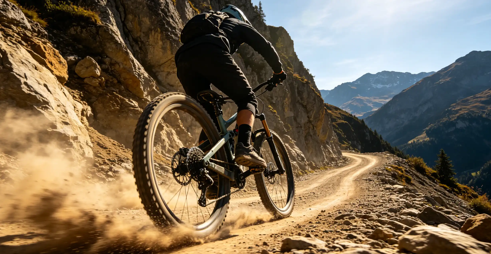

You spent $4,000 on a bike with 150mm of Fox Factory suspension, and you are riding it with the factory settings—which are tuned for a 170-pound rider when you weigh 210. Your suspension is either packing down on repeated hits or bouncing you off the trail like a pogo stick. A properly tuned suspension is the single biggest performance upgrade you can make—and it costs nothing but 30 minutes of your time. This article walks you through setting sag, rebound, and compression on your fork and shock so your bike rides like it was designed to.
Frequently Asked Questions
Check sag at least once a month, as air slowly leaks past the seals. Check it before any big ride or race. Rebound and compression settings should be checked whenever you change air pressure. If you ride in significantly different temperatures (winter vs. summer), air pressure will change—cold air is denser, so you may need to add 5–30 PSI in winter.
The Day I Discovered My Suspension Was Wrong
In September 2024, I was riding my new Santa Cruz Hightower at the Mountain Creek Bike Park in New Jersey. I was struggling on the rock gardens—my hands were getting beat up, the rear wheel was skipping, and I felt like I was fighting the bike. A suspension tech at the park's Fox Service Center offered to check my setup. He measured my sag and laughed: my rear shock was at 15% sag instead of the recommended 28–30%. I had been riding the bike for three months with the shock essentially locked out.
He removed all the air, set the pressure to my weight, and had me sit on the bike to measure sag. Fifteen minutes later, I was riding the same rock gardens with complete control. The bike felt like it had gained an inch of travel. The rear wheel was tracking the ground instead of bouncing off rocks, and my hands no longer hurt after a run. I had been blaming myself for poor technique when the real problem was a shock that was not moving.
Understanding Sag: The Foundation of Suspension Setup
Sag is the amount your suspension compresses under your body weight when you are in your riding position. It is measured as a percentage of total travel. Proper sag ensures that your suspension sits in the middle of its travel range, where it can both absorb impacts (compress) and extend into holes (rebound). Too little sag, and your suspension will not use its full travel; too much sag, and you will bottom out constantly.
| Bike Type | Recommended Rear Sag | Recommended Front Sag |
|---|---|---|
| Cross-Country (100–120mm) | 20–75% | 15–30% |
| Trail (130–150mm) | 25–30% | 20–75% |
| All-Mountain/Enduro (150–170mm) | 28–83% | 20–75% |
| Downhill (180–200mm+) | 30–75% | 20–75% |
To set sag, you need a shock pump ($30–$ for a quality one like the Fox High-Pressure Pump or the RockShox High-Pressure Pump). Do not use a regular tire pump—suspension pressures range from 100–200 PSI, and a shock pump's small volume and precise gauge are essential. Here is the process:
Step 1: Open the fork and shock fully (turn compression damping to full open).
Step 2: Slide the sag indicator O-ring (the rubber ring on the stanchion) all the way down against the seal.
Step 3: Get on the bike in your normal riding position—standing on the pedals with your weight centered. Do not bounce. Have a friend hold the bike steady, or lean against a wall.
Step 4: Carefully get off the bike without compressing the suspension further. The distance the O-ring moved is your sag. Measure it with a ruler in millimeters.
Step 5: Divide the sag distance by the total travel. If your shock has 50mm of stroke and the O-ring moved 14mm, your sag is 28%. Adjust air pressure up or down and repeat until you hit the target range.
Rebound Damping: Controlling the Return Stroke
Rebound controls how fast your suspension returns to its original position after compressing. Too fast, and the bike bucks you like a mechanical bull; too slow, and the suspension packs down—each successive hit compresses it further until you have no travel left. The "packing down" phenomenon is the most common suspension problem I see on the trail, and it is almost always caused by rebound that is too slow.
The rebound tuning test is simple: find a curb or a small log. Ride off it at a walking pace. The suspension should compress and then return to its original position in one smooth motion—no bouncing, no hesitation. If the bike bounces after landing, your rebound is too fast. If it stays compressed and recovers slowly, your rebound is too slow.
| Rebound Setting | Symptom While Riding | How to Fix |
|---|---|---|
| Too Fast | Bike feels bouncy and unstable, rear wheel kicks up on jumps | Add 1–3 clicks of rebound damping (turn toward "slow" or "+") |
| Too Slow | Suspension packs down on repeated hits, harsh ride, not using full travel | Remove 1–3 clicks of rebound damping (turn toward "fast" or "-") |
| Correct | Suspension returns smoothly, one motion per impact, uses full travel without bottoming hard | Note the click count and keep it |
Air pressure and rebound are interrelated. If you increase air pressure (firmer spring), you need less rebound damping because the spring is stronger and returns faster. If you decrease air pressure, you may need more rebound damping. Always set sag first, then tune rebound.
Compression Damping: Controlling the Compression Stroke
Compression damping controls how the suspension resists compression forces. There are two types: low-speed compression (LSC), which controls body movements like pedal bob and brake dive, and high-speed compression (HSC), which controls the suspension's response to sharp impacts like rocks and square-edge hits.
Low-speed compression is your primary tool for tuning the bike's pedaling platform. More LSC means less pedal bob—the bike feels firmer and more efficient when climbing. Less LSC means the suspension is more active over small bumps, which improves traction on climbs but can feel mushy. Most trail and enduro bikes have a three-position compression lever (Open, Trail/Pedal, Lock) that makes this easy. Use Open for descents, Trail for rolling terrain, and Lock for fire-road climbs.
High-speed compression is more nuanced. Too much HSC makes the bike feel harsh on square-edge hits—the suspension refuses to move on sharp impacts, and the force is transmitted to your hands and feet. Too little HSC, and the bike blows through its travel on big hits, bottoming out harshly. The Fox GRIP2 damper (found on Fox 36 and 38 Factory forks) and the RockShox Charger 3 damper both offer independent HSC and LSC adjustment. Start with the manufacturer's recommended settings, then add or remove one click at a time.
Volume Spacers: Fine-Tuning the Spring Curve
Volume spacers (also called tokens or Bottomless Tokens) are small plastic rings that reduce the air volume inside your fork or shock. Adding spacers makes the spring curve more progressive—the suspension is softer at the beginning of the stroke and ramps up harder at the end. Removing spacers makes the spring curve more linear—the suspension feels the same throughout the stroke.
You need volume spacers if you are using full travel too easily (bottoming out on moderate features) despite having the correct sag. A Fox 36 fork ships with 3 volume spacers installed and can accommodate up to 7. Each spacer costs about $5 and takes 5 minutes to install. If you are bottoming out harshly, add one spacer and test. If you are not using the last 10–25mm of travel on your hardest rides, remove one spacer. The goal is to use full travel on your hardest hit of the ride—not every rock garden, but the biggest feature you tackle.
Who This Is For (And Who It's Not)
Best for: Any rider who owns a full-suspension mountain bike (or a bike with a suspension fork) and has never set sag or tuned rebound. Riders who feel like their bike is "fighting" them on rough terrain. Anyone who has ever said, "I just ride it the way it came from the factory."
Not ideal for: Riders on rigid bikes (obviously). Riders who are perfectly happy with their current setup and have no complaints about how their bike handles—but even then, a quick sag check takes 5 minutes and might reveal a setup issue you did not know you had.
For most riders, basic sag and rebound setup is sufficient. A professional suspension tune ($150–$) is worth it if you are racing, if you are significantly outside the weight range the suspension was designed for (under 130 lbs or over 230 lbs), or if you want custom valving for your specific riding style and terrain. Companies like Diaz Suspension Design and Vorsprung Suspension are well-regarded for custom tuning.
A good starting point is your body weight in pounds as the PSI for your fork. For a 180-pound rider, start at 180 PSI in the fork, then adjust based on sag measurement. For the rear shock, the starting pressure depends on the bike's leverage ratio, but typically 1x your body weight in PSI is a safe starting point—adjust up or down from there.
A quiet squishing sound is normal—it is the oil moving through the damper circuits. However, a loud squelching or sucking sound may indicate air in the damper oil, which means the suspension needs a service. A clunking sound, especially on rebound, is not normal and should be investigated by a shop.
Check the O-ring position after a hard ride. If the O-ring is pushed all the way to the bottom of the stanchion (using 100% of travel), and you felt a harsh clunk when it happened, you are bottoming out too easily. Add volume spacers to increase bottom-out resistance. If you are using 85–75% of travel on your hardest hits, your setup is correct.
Coil springs offer better small-bump sensitivity and a more linear feel, but they are heavier and the spring rate is not easily adjustable—you need to swap springs if your weight changes. Air springs are lighter, easily adjustable, and offer progressive spring curves via volume spacers. For most trail riders, air is the better choice. Downhill and enduro racers often prefer coil for its consistent feel on long descents.
For bike park riding, add 2–2 PSI to your fork and shock, slow down rebound by 1–3 clicks, and add one volume spacer to both fork and shock if you are bottoming out. The higher speeds and bigger hits at bike parks require a firmer setup than your usual trail ride. If you ride the park regularly, consider keeping a second set of suspension settings written down.
Conclusion
A $5,000 bike with poorly tuned suspension rides worse than a $2,000 bike with perfect suspension setup. The three variables—sag, rebound, and compression—are not complicated once you understand what each one does. Set sag first, tune rebound second, and dial compression last. Volume spacers are the final adjustment for riders who want to fine-tune the spring curve.
Your two action items: (1) Buy a shock pump if you do not already own one—the Fox High-Pressure Pump is $35 and will last for years. (2) Set your sag this weekend. It takes 10 minutes per end of the bike, and the difference in ride quality will be immediately noticeable on your next ride.
Sources: Fox Factory suspension tuning guides and service manuals; RockShox suspension setup documentation; SRAM Trailhead suspension tuning app; Santa Cruz Bicycles suspension setup recommendations; Diaz Suspension Design and Vorsprung Suspension custom tuning services; Mountain Creek Bike Park Fox Service Center.